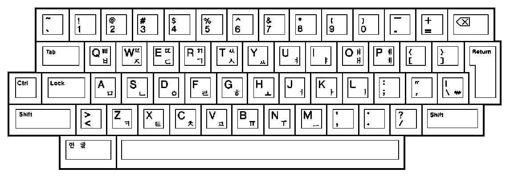

The Korean keyboard has two keys, the Korean/Chinese and the Korean/English toggles, that generate scancodes f1 and f2 (respectively) when pressed, and nothing when released. They do not repeat. The keycaps are "hancha" and "han/yong" (written in Hangul). Hancha (hanja) means Chinese character, and Han/Yong is short for Hangul/Yongcha (Korean/English). They are located left and right of the space bar.
Dave Willis reports on his A4tech keyboard:
Apart from the Korean Hancha and Han/Yong keys, there are on the top row:
e0 5f (Moon), e0 6c (Mail), e0 6b (Computer), e0 21 (Calculator), e0 6d (Notes), e0 10 (Previous), e0 19 (Next), e0 2e (Minus), e0 20 (Mute), e0 30 (Plus), e0 22 (Play/Pause), e0 24 (Stop), e0 65 (Magnifier), e0 32 (Home), e0 66 (Folder), e0 67 (recycle-style arrows), e0 68 (x).
Below mute: e0 62 (Office).
On the right hand side: e0 6a (arrow up left), e0 69 (arrow down right), e0 0b (wheel up), e0 2c (wheel down), e0 64 (wheel in).
Wheel up and wheel down have no release code, only the plus and minus keys will repeat themselves when held down.
